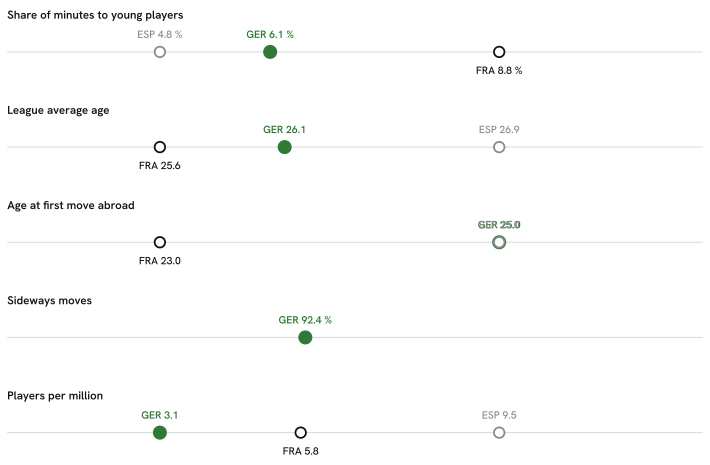

Summary · Question 1 of 14
Why the train left
Five numbers, in the order they build on each other, show where the pool of players available to the national team gets thin. Each one is shown for German football and for the two countries used as a comparison throughout this report; each links to the part of the report that shows the full evidence.

-
Young players do not get much of the playing time in the country's own top league.
Share of league minutes that went to players aged 21 or under
GER 6.1 % FRA 8.8 % ESP 4.8 %Clubs that gave those young players more than a tenth of their own playing time
GER 14 of 18 clubs FRA 14 of 18 clubs ESP 7 of 20 clubsUnder-21 nationals who were regular starters, per club in the league
GER 1.06 per club (19 players) FRA 1.28 per club (23 players) ESP 0.70 per club (14 players)The regular-starter line is drawn at ten starts; at five it is 1.3 per club, at fifteen 0.8 (ten: 1.1).
They are not being used as late substitutes: 6.0 % of the league’s starts went to them against 6.1 % of its minutes, and when one of them started he was on the pitch for 78 minutes against the league’s own 80. The difference between these countries is how many young players are picked at all, not how they are used once picked.
-
The league those minutes are missing from is, on average, an old one.
Average age of a minute played in the league
GER 26.1 FRA 25.6 ESP 26.9Share of league minutes that went to players aged 30 or over
GER 20.9 % FRA 20.2 % ESP 28.9 % -
So the first move to a foreign league, when it happens, comes late.
Age the first time a player has real playing time in a foreign league, over the players abroad today
GER 25 years (316 players) FRA 23 years (205 players) ESP 25 years (132 players) -
And the move, when it happens, is often not a step up.
Share of moves abroad to a league no stronger than the player's own
GER 92 % FRA — ESP — -
The layer of players in Europe's strongest leagues stays thin, and it fell sharply once.
Players in Europe's strongest leagues, for every million people
GER 3.13 FRA 5.79 ESP 9.54Around the 2000/01 season, the model finds a possible shift in the count of German players in Europe's strongest leagues, with 69 percent probability that it is a genuine change rather than an ordinary season-to-season dip. Break & forecast.
If you take one thing from this: the single measured link that carries the most of the gap is different for each comparison — how old players are when they move abroad for France, how strong the domestic league is for Spain. That is one decomposition over 8 countries — a description of the gap, not a weight to plan by.
What this does not show
- Money: transfer fees, wages and academy budgets play no part in any number above.
- How the academy and coaching set-up actually work day to day, which no public data source used here can see.
- Agents, and how a move abroad actually gets arranged, which happens off any table this pipeline can read.
- The direction of the arrow: a low share of playing time for young players at home could help cause a thin generation, or just as easily be a symptom of one — the five numbers above are associations measured the same way for every country.
Explore the data
Why does the train leave?
Why does the train leave?
Four exhibits comparing Germany with 7 peer countries: youth exposure at home, export route, how exports fare, and who made it.
Exhibit A — youth exposure at home
Share of a domestic league's total minutes played by its own nationals aged 21 or under, 2025/26.
* Σ minutes of players with the league country's nationality and age ≤ 21 at the season's start ÷ Σ minutes of all players in the league, 2025/26. Under-23 shares: NED 24.2 %, FRA 14.4 %, BEL 16.4 %, GER 10.9 %, POR 9.1 %, ESP 16.9 %, ENG 6.4 %, ITA 7.3 %. A league without a bar is not covered by FBref.
Exhibit B — export route
For every peer-country player on a 2026/27 top-9 roster: the age at the first top-9 season (full roster, and recent entrants only) and, for recent entrants, the league of the season before it. Not informative for this nation: Bundesliga and every peer's own league are themselves top-9 leagues, so the domestic / top-9 split has no content here; the exhibit is kept for comparability with other nations. German exports: 208 players, median export age 22.5 (recent entrants 63, median 22), 0 % of the recent ones straight from the Bundesliga*.
| Country | n | Recent | Export age (all) | Export age (recent) | Domestic | Stepping stone | Other top-9 | Not covered | Censored |
|---|---|---|---|---|---|---|---|---|---|
| GER Germany | 208 | 63 | 22.5 | 22 | 0 % | 57 % | 0 % | 43 % | 36 % |
| FRA France | 313 | 107 | 21 | 21 | 0 % | 2 % | 0 % | 98 % | 34 % |
| ESP Spain | 368 | 98 | 22 | 21.5 | 0 % | 0 % | 0 % | 100 % | 33 % |
| ITA Italy | 144 | 36 | 21 | 22 | 0 % | 0 % | 0 % | 100 % | 32 % |
| ENG England | 154 | 29 | 21 | 20 | 0 % | 0 % | 0 % | 100 % | 39 % |
| NED Netherlands | 268 | 78 | 20 | 20.5 | 0 % | 3 % | 0 % | 97 % | 29 % |
| POR Portugal | 176 | 40 | 20.5 | 20.5 | 0 % | 5 % | 0 % | 95 % | 36 % |
| BEL Belgium | 208 | 55 | 20 | 20 | 0 % | 0 % | 0 % | 100 % | 32 % |
* Export age = age at the first season in any headline league, history back to 2020/21; a first appearance already in 2020/21 is censored. Recent entrants: first top-9 season 2025/26 or 2026/27, the only ones whose previous season lies inside the fetched window (2024/25 onwards for peer domestic leagues). Stepping-stone leagues: NED-Eredivisie, BEL-Pro League, POR-Primeira Liga, TUR-Süper Lig, GER-2. Bundesliga. Not covered: no earlier row in the data.
Exhibit C — how the exports fare
Peer-country players at a top-9 club in 2025/26: median share of the club's minutes, and the club's strength within its league.
* Minutes share = player minutes ÷ (club matches × 90), 2025/26, one row per player-season. Club strength proxy: goals-scored percentile within league — clubs ranked by the goals their own roster scored that season (ClubElo was unreachable at run time). Both are medians over the country's exports; n per country in the bars.
Exhibit D — profile of those who made it
Goals + assists per 90, league-adjusted, in 2025/26 by the tier of the player's own league: domestic, stepping stone, top-9, or another covered league. German count and median against the median of the peer countries' values. Not informative for this nation: Bundesliga and every peer's own league are themselves top-9 leagues, so the domestic / top-9 split has no content here; the exhibit is kept for comparability with other nations.
Profile table by tier and position group
| Tier | Group | GER n | GER median | Peer median n | Peer median |
|---|---|---|---|---|---|
| stepping-stone league | FW | 24 | 0.22 | 1 | 0.22 |
| stepping-stone league | MF | 100 | 0.09 | 2 | 0.09 |
| stepping-stone league | DF | 74 | 0.03 | 1 | 0.03 |
| top-9 league | FW | 26 | 0.37 | 22 | 0.28 |
| top-9 league | MF | 81 | 0.18 | 84 | 0.14 |
| top-9 league | DF | 64 | 0.07 | 62 | 0.05 |
| other covered league | FW | 11 | 0.14 | 4.5 | 0.14 |
| other covered league | MF | 7 | 0.07 | 5 | 0.09 |
| other covered league | DF | 25 | 0.03 | 7 | 0.03 |
* Tier = the league of the player's own 2025/26 season. Peer median n and peer median are medians across the peer countries present in that tier and group; a tier a country has no player in is absent, not zero.
Exhibit E — where German exports go
Of the 410 mapped German players, 288 play outside the Bundesliga.
- stepping stone
Marvin Wanitzek · Enzo Leopold · Soufiane El-Faouzi - top-9
Jeremy Toljan · Malick Thiaw · Kevin Schade - other
Antonios Papadopoulos · Oliver Steurer · Jamie Lawrence
* Buckets by the league of the player's own 2025/26 season; a player is counted once per position group, like everywhere else on the page, so one with rows in two groups counts in each; the number in front of each bar is the player count, the median multiplier is the bucket's median league multiplier. Sideways: destination league multiplier <= the domestic league's multiplier.
F · The 2026 FIFA World Cup squad by league tier
Where the 26 players named to the 2026 FIFA World Cup squad played in 2025/26, next to France, Spain, England, Netherlands, Belgium, Portugal. Tier = the league of the player's most-minutes 2025/26 row.
Minutes, multipliers and age cohorts by country
| Country | Median minutes | Median multiplier | U22 | 23–25 | 26–29 | 30+ |
|---|---|---|---|---|---|---|
| GER Germany | 2208.5 | 0.788 | 2 | 8 | 4 | 12 |
| FRA France | 2316 | 0.807 | 3 | 7 | 10 | 6 |
| ESP Spain | 2181 | 0.807 | 3 | 8 | 7 | 8 |
| ENG England | 2199 | 1.000 | 2 | 8 | 9 | 7 |
| NED Netherlands | 1903 | 1.000 | 1 | 7 | 11 | 7 |
| BEL Belgium | 2034 | 0.807 | 4 | 8 | 5 | 9 |
| POR Portugal | 2226 | 0.807 | 1 | 6 | 11 | 8 |
* 8 squad players have no 2025/26 row in the fetched leagues and are counted as unmatched.